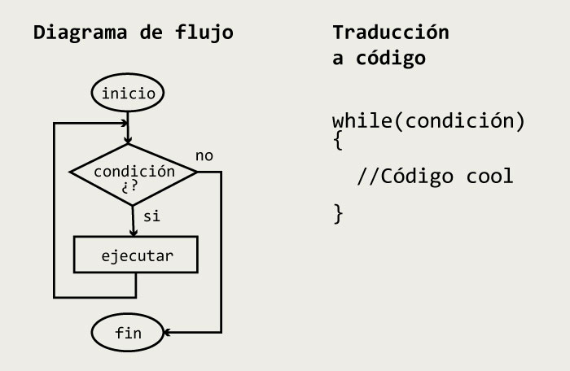
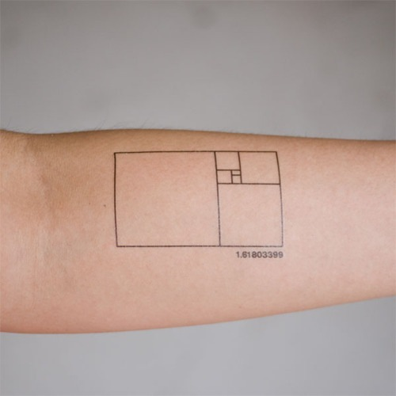
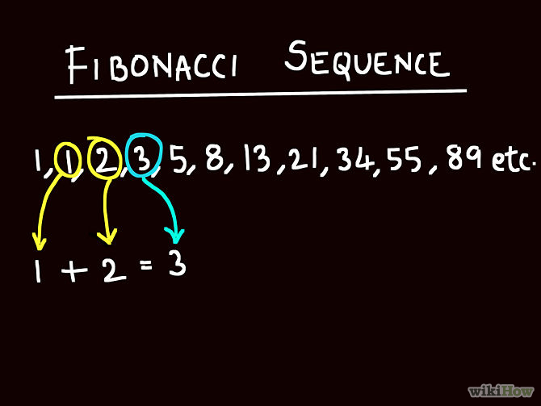

Entrada y salida de datos
TODO valor que se le pide al usuario por medio de la consola es de tipo cadena, ya que el usuario utiliza el teclado y este le permite ingresar cualquier combinación de caracteres, números y símbolos. La entrada es clave para un programa, por tanto si se pide al usuario un número se debe validar que el usuario si haya ingresado un número con las características solicitadas.
Pasos para leer un dato
Para leer un valor se recomienda seguir los siguientes pasos:
- Declare dos variables, una de tipo alfanúmerico (cadena - string) y otra del tipo de dato que requiera usar en el programa
- Pida el valor al usuario y guardelo en la variable cadena.
- Valide que el dato ingresado, puede ser convertido en el dato que necesita.
Pasos para leer un dato
- Si el dato es compatible con el tipo de dato requerido, realice la conversión y guardela en una variable del tipo especifico.
- Si el dato no se puede convertir muestre un mensaje de error y termine el programa o vuelva a solicitar el dato.
Lectura de datos v1
string temp;
int numero;
temp = Console.ReadLine();
if(int.TryParse(temp,out numero))
{
Console.WriteLine("El cuadrado del valor ingresado es " + (numero * numero));
}
else
{
Console.WriteLine("Error en el ingreso de datos");
}
El código compila y funciona, pero no hay feedback para el usuario.
Feedback de usuario al ingresar un dato
La consola es poco amigable con el usuario, por tanto debemos suministrar mensajes para indicarle que espera el programa que realice la persona mientras interactua con la aplicación.
Lectura de datos v2
string temp;
int numero;
//Feedback inicial con la variable
Console.WriteLine("Ingrese un valor númerico para calcular su cuadrado");
temp = Console.ReadLine();
if(int.TryParse(temp,out numero))
{
Console.WriteLine("El cuadrado del valor ingresado es " + (numero * numero));
}
else
{
Console.WriteLine("Error en el ingreso de datos");
}
//Esta instrucción espera que se lea una línea, esto evita que el programa se cierre.
Console.ReadKey();
El código ya tiene feedback, el usuario sabe que debe hacer. Ejecutar código.
Precaución a leer los datos
Lo más importante al leer los datos es garantizar que la información mínima que requiere el programa sea leída correctamente. Si se usa código de internet, en algunas oportunidades los datos no se leen correctamente, ocasionando un error en tiempo de ejecución.
//OJO: NO hacer esto, posible error en tiempo de ejecución
Console.WriteLine("Ingrese un valor");
int x = int.Parse(Console.ReadLine());
Ejercicios
Realice un programa que:
- Calcule el promedio de 3 números de punto flotante que se le piden al usuario. Solución
- Lea la hora (sin minutos) en formato militar, imprima Buenos días si hora es mayor o igual a cero y menor que 12, imprima Buenas tardes, si la hora es mayor o igual a 12 y menor que 18, Buenas noches si la hora es mayor o igual a 18 y menor que cero.
- Pedir un valor al usuario y realizar una operación así: 1. Sumar. 2. Multiplicar. 3. Dividir 4.Salir (Valide los datos y las operaciones) Solución
Ejercicios
- ¿Cómo se leen por teclado los siguientes datos: bool, string, short, float, byte, decimal, double?
- ¿De que tipo es el resultado de promediar 3 número enteros?
Casting implícito
El casting implicito se da cuando se asigna una variable de capacidad menor a una de mayor capacidad.
int x = 5;
float y = x;
Console.WriteLine(y); //Salida 5
Casting explícito
Se da cuando se requiere asignar una variable de mayor capacidad a una de menor, si recuerda esta operación genera un desbordamiento, pero en este caso se le advierte de manera explicita al compilador que hay conciencia de la perdida de precisión. No hay desbordamiento pero si una perdida consentida de información.
float y = 3.9999f;
int x = (int)y;
Console.WriteLine(y); //Salida 3
No rendondea, se trunca el dato.
🔂 Ciclos
Las estructuras de control cíclicas o bucles, permiten crear operaciones repetitivas sobre determinado número de sentencias. Muy importante crear una condición que se convierta en false en las sentencias dentro del ciclo, para poder salir del bucle, si esto no sucede se presenta un error en tiempo de ejecución conocido como un ciclo infinito.
Ciclo mientras que
Mientras la condición es verdadera realizo operaciones.
Incremento - Decremento
Incrementar o decrementar una variable, es una operación que se utiliza frecuentemente cuando se usan ciclos, veamos algunos ejemplos:
int x = 1;
x = x + 1; // Incrementa x en una unidad
Console.WriteLine(x); //Salida 2
x++; // Incrementa a x en una undidad, post incremento
Console.WriteLine(x); //Salida 3
x+=1; // Incrementa a x en una undidad
Console.WriteLine(x); //Salida 4
Incremento - Decremento
Ahora probemos los decrementos de una variable, es muy similar al usar el operador suma, pero lo cambiamos por resta:
int x = 1;
x = x - 1; // Incrementa x en una unidad
Console.WriteLine(x); //Salida 0
x--; // Incrementa a x en una undidad, post incremento
Console.WriteLine(x); //Salida -1
x-=1; // Incrementa a x en una undidad
Console.WriteLine(x); //Salida -2
🚨 No existe el triple incremento, es decir +++ ni ---
Incremento - Decremento
Ahora veamos el operador pre incremento, el cual modifica la variable y asigna inmediatamente el valor a la variable, mientras que el pos incremento, modifica la variable pero asigna el valor en la siguiente sentencia, no se asigna en la misma, veamos un ejemplo:
int x = 1;
Console.WriteLine(++x); //Salida 2
Console.WriteLine(x++); //Salida 2, asigna el valor en la siguiente sentencia
Console.WriteLine(x); //Salida 3
✏️ Realice un ejemplo usando el predecremento y postdecremento
Incremento - Decremento
Los incrementos o decrementos, no siempre son sumas o restas, podemos tener incrementos usando multiplicación, división, incrementos de a 2, 3, ..n. Se pueden usar la mayoría de operadores, salvo los operadores pre y post.
int x = 1;
x+=2;
Console.WriteLine(x); //Salida 3, incremento en dos
x*=4;
Console.WriteLine(x); //Salida 12, incremento en 4
x/=3;
Console.WriteLine(x); //Salida 4, decremento en 3
✏️ Utilice incrementos o decrementos usando otros operadores
Ciclo mientras que
Volviendo a los ciclos, realicemos un primer ejemplo. Imprimir los números de 1 hasta 100.
int n = 1, m = 100;
while(n < m){
Console.WriteLine(n);
n = n + 1;
}
🔢 Modifique el código pero pida los valores del rango de números, siendo n < m y n>0
➕ Modifique el código, para que use post incremento
Ejercicios ciclo mientras que
- Cree un "menú infinito", que permita seleccionar entre las siguientes opciones: 1. suma, 2. resta, 3. multpilicar, 4. dividir. 5. Para salir
- Calcule la suma de los primeros n números naturales
- Calcule el promedio de n números.
Sección especial, serie de fibonacci.
La sucesión de Fibonacci
También conocida como secuencia de Fibonacci o incorrectamente como serie de Fibonacci, es en sí una sucesión matemática infinita. Consta de una serie de números naturales que se suman de a 2, a partir de 0 y 1. Básicamente, la sucesión de Fibonacci se realiza sumando siempre los últimos 2 números (Todos los números presentes en la sucesión se llaman números de Fibonacci) de la siguiente manera:
0,1,1,2,3,5,8,13,21,34...
Realizar el pseudocodigo y el diagrama de flujo de los siguientes ejercicios.
- El usuario ingresa el termino que quiere calcular de la serie de fibonacci y el algoritmo lo resuelve.
- Algoritmo que imprime la suma de los primeros n valores de la serie de fibonacci.
- Algoritmo que imprime los números en orden decreciente de la serie de fibonacci.
- Algoritmo que multiplica los números de fibonacci.
Referentes y curiosidades
Referentes y curiosidades Serie de Fibonacci
Algunos códigos vistos en clase
Recopilación de ejercicios de caracteres, cadenas, estructuras de control, casting implícito y casting explícito.
Impresión usando ascii art
Usando un generador de letreros en ascii art, se códifica la impresión línea a línea usando Console.Write
Console.ForegroundColor = ConsoleColor.DarkRed; //Observe esta línea, descubra para que sirve
Console.WriteLine(" _ _ _ _ _ ");
Console.WriteLine("/_/\\ /\\ \\ / /\\ /\\ \\ / /\\ ");
Console.WriteLine("\\ \\ \\ \\ \\_\\ / / \\ / \\ \\ / / \\ ");
Console.WriteLine(" \\ \\ \\__/ / / / / /\\ \\ / /\\ \\ \\ / / /\\ \\ ");
Console.WriteLine(" \\ \\__ \\/_/ / / /\\ \\ \\ / / /\\ \\ \\ / / /\\ \\ \\ ");
Console.WriteLine(" \\/_/\\__/\\ / / / \\ \\ \\ / / / \\ \\_\\ / / / \\ \\ \\ ");
Console.WriteLine(" _/\\/__\\ \\ / / /___/ /\\ \\ / / / \\/_/ / / /___/ /\\ \\ ");
Console.WriteLine(" / _/_/\\ \\ \\ / / /_____/ /\\ \\ / / / / / /_____/ /\\ \\ ");
Console.WriteLine(" / / / \\ \\ \\ / /_________/\\ \\ \\ / / /________ / /_________/\\ \\ \\ ");
Console.WriteLine(" / / / /_/ // / /_ __\\ \\_\\/ / /_________\\/ / /_ __\\ \\_\\ ");
Console.WriteLine(" \\/_/ \\_\\/ \\_\\___\\ /____/_/\\/____________/\\_\\___\\ /____/_/ ");
Console.WriteLine(" _ _ _ _ ");
Console.WriteLine(" /\\ \\ / /\\ /\\ \\ _ / /\\ ");
Console.WriteLine(" / \\ \\ / / \\ / \\ \\ /\\_\\ / / \\ ");
Console.WriteLine(" / /\\ \\ \\ / / /\\ \\ / /\\ \\ \\_/ / // / /\\ \\ ");
Console.WriteLine(" / / /\\ \\_\\ / / /\\ \\ \\ / / /\\ \\___/ // / /\\ \\ \\ ");
Console.WriteLine(" / / /_/ / / / / / \\ \\ \\ / / / \\/____// / / \\ \\ \\ ");
Console.WriteLine(" / / /__\\/ / / / /___/ /\\ \\ / / / / / // / /___/ /\\ \\ ");
Console.WriteLine(" / / /_____/ / / /_____/ /\\ \\ / / / / / // / /_____/ /\\ \\ ");
Console.WriteLine(" / / /\\ \\ \\ / /_________/\\ \\ \\ / / / / / // /_________/\\ \\ \\ ");
Console.WriteLine("/ / / \\ \\ \\/ / /_ __\\ \\_\\/ / / / / // / /_ __\\ \\_\\ ");
Console.WriteLine("\\/_/ \\_\\/\\_\\___\\ /____/_/\\/_/ \\/_/ \\_\\___\\ /____/_/ ");
Console.WriteLine(" .--._.--.");
Console.WriteLine(" ( O O )");
Console.WriteLine(" / . . \\");
Console.WriteLine(" .`._______.'.");
Console.WriteLine(" /( )\\");
Console.WriteLine(" _/ \\ \\ / / \\_");
Console.WriteLine(" .~ ` \\ \\ / / ' ~.");
Console.WriteLine(" { -. \\ V / .- }");
Console.WriteLine("_ _`. \\ | | | / .'_ _");
Console.WriteLine(">_ _} | | | {_ _<");
Console.WriteLine(" /. - ~ ,_-' .^. `-_, ~ - .\\");
Console.WriteLine(" '-'|/ \\|`-`");
Entrada de datos númericos primitivos
Teniendo en cuenta que todo lo que se lee por teclado es una cadena, acá se muestra un ejemplo de una de las formas correctas que existen para leer un número desde la consola.
string temp;
double n;
Console.WriteLine("Ingrese un número");
temp = Console.ReadLine();
if(double.TryParse(temp,out n))
{
if(n>1)
{
Console.WriteLine("Muy bien reclama "+n+" panzzerotis del rey ");
}
else
{
Console.WriteLine("Muy bien reclama "+n+" panzzeroti del rey ");
}
}
else{
Console.WriteLine("Lo siento pero no ingreso un número, muere.");
}
Caracteres
En el siguiente bloque se observa el uso del casting explícito y la relación entre el código ascii y un caracter.
for(int i=33;i<=126;i++)
{
Console.Write((char)i);
}
Imprimir una cadena en orden inverso
En este bloque se observa como se puede leer, imprimir y manipular una cadena
string cadena = "";
Console.WriteLine("Ingrese una cadena");
cadena = Console.ReadLine();
//Console.WriteLine(cadena.Replace("hola","adios"));
Console.WriteLine("Longitud o el numero total de caracteres "+cadena.Length);
Console.WriteLine("Primer caracter "+cadena[0]);
Console.WriteLine(" Ultimo caracter"+cadena[cadena.Length-1]);
for(int i=cadena.Length-1;i>=0;i--)
{
Console.Write(cadena[i]);
}
Console.WriteLine();
Promedio de datos quemados
Observe como se inicializan con literales variables de tipo float
float a, b, c, d, e;
float resultado;
a = 4;
b = 5;
c = 7;
d = 9;
e = 23.5F;
resultado = (a + b + c + d + e) / 5;
Console.WriteLine("El resultado es = "+resultado);
Promedio de n números de punto flotante
Acá ponemos a prueba la lectura de un dato de tipo entero y otro de tipo double.
int n,contador;
double numero,total;
string temp;
total = 0;
contador = 1;
Console.WriteLine("Ingrese el total de datos para el promedio");
temp = Console.ReadLine();
if (int.TryParse(temp, out n))
{
while (contador <= n)
{
Console.WriteLine("Ingrese el dato " + contador);
temp = Console.ReadLine();
if (double.TryParse(temp, out numero))
{
total = total + numero;
contador++;
}
else
{
Console.WriteLine("Dato incorrecto, intente nuevamente");
}
}
Console.WriteLine("El promedio es "+(total/n));
}
else
{
Console.WriteLine("Valor incorrecto para n");
}
Desde cero hasta n
Observe como se pueden usar los datos que se piden al usuario como condicional de un ciclo while
int n;
int contador = 0;
string dato;
Console.WriteLine("Ingrese n");
dato = Console.ReadLine();
if (int.TryParse(dato, out n))
{
while (contador <= n)
{
Console.WriteLine(contador);
contador = contador + 1;
}
}
else
{
Console.WriteLine("Error en el ingreso de n");
}